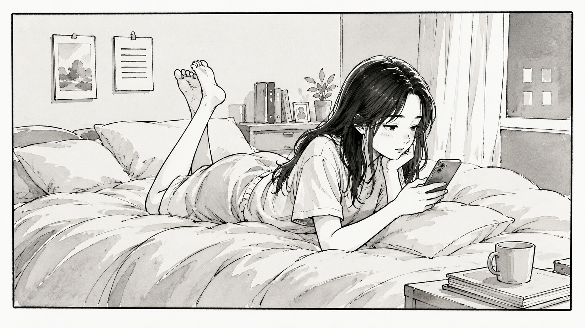
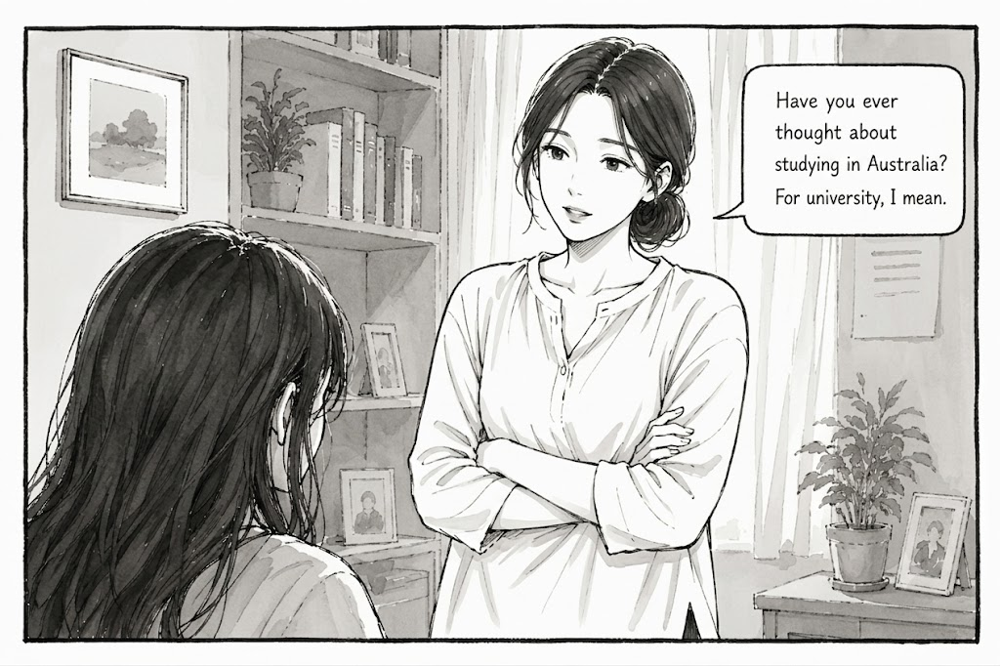
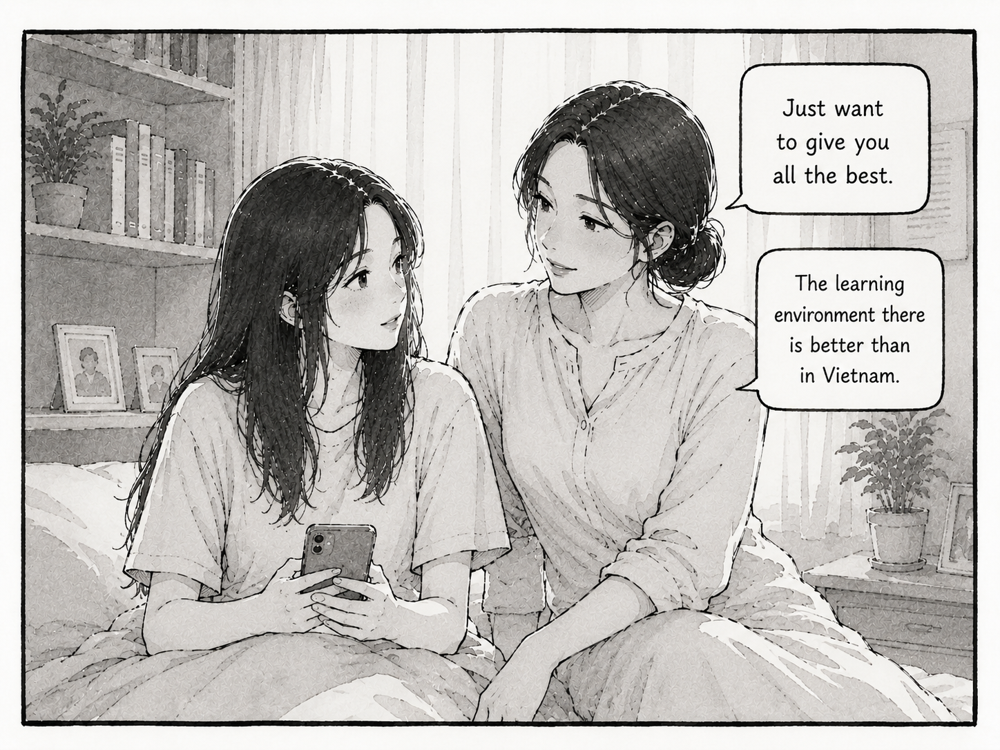
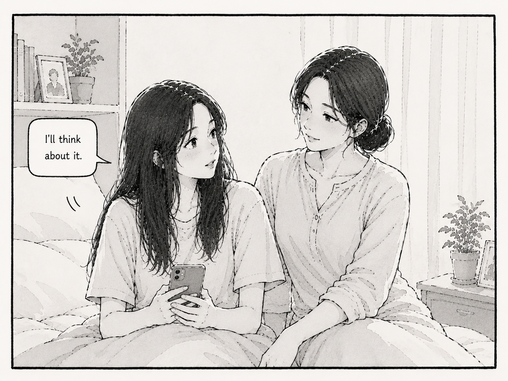
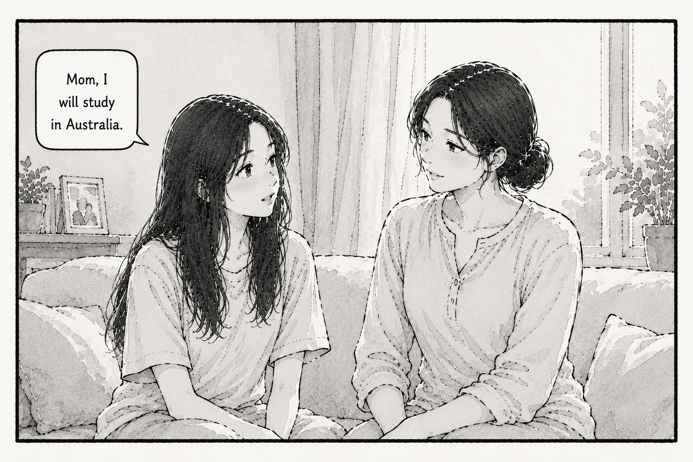
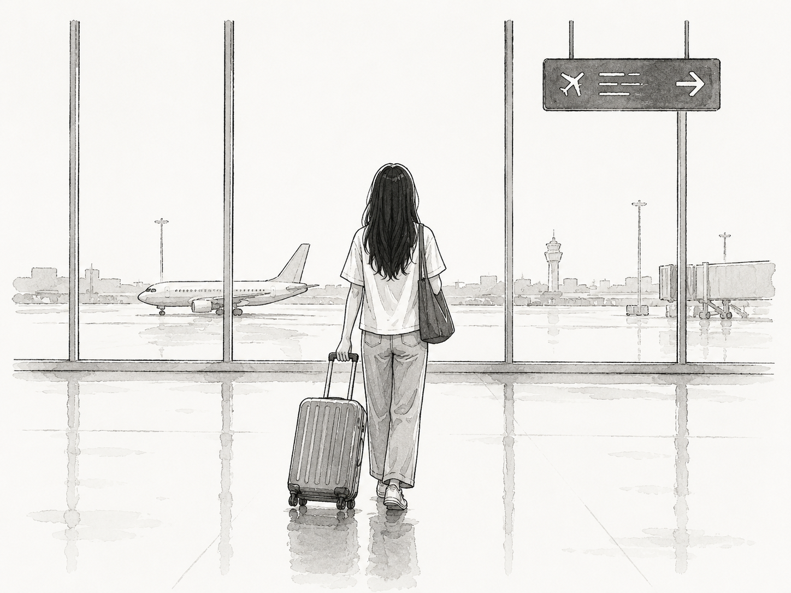
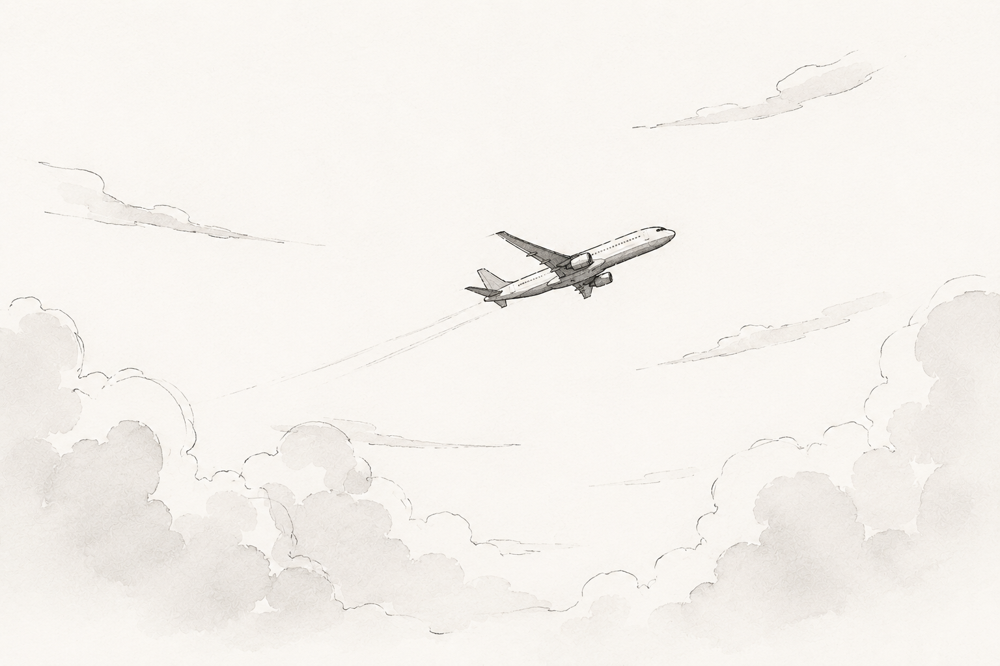
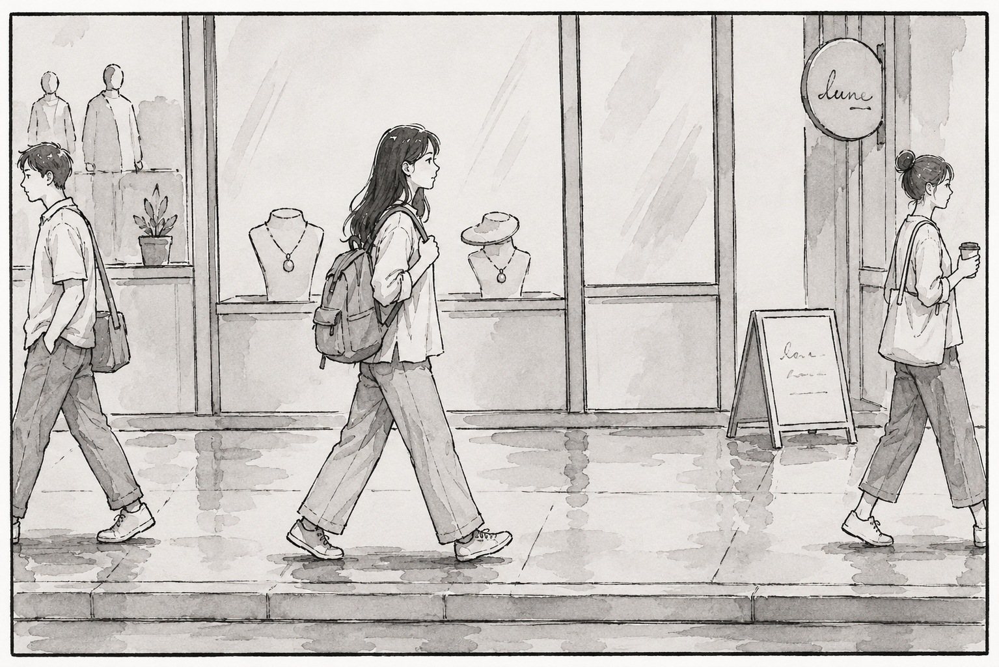
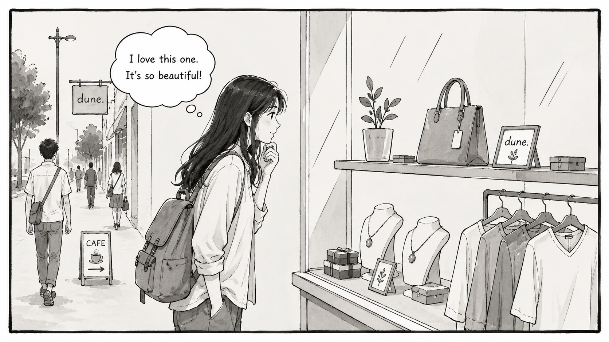
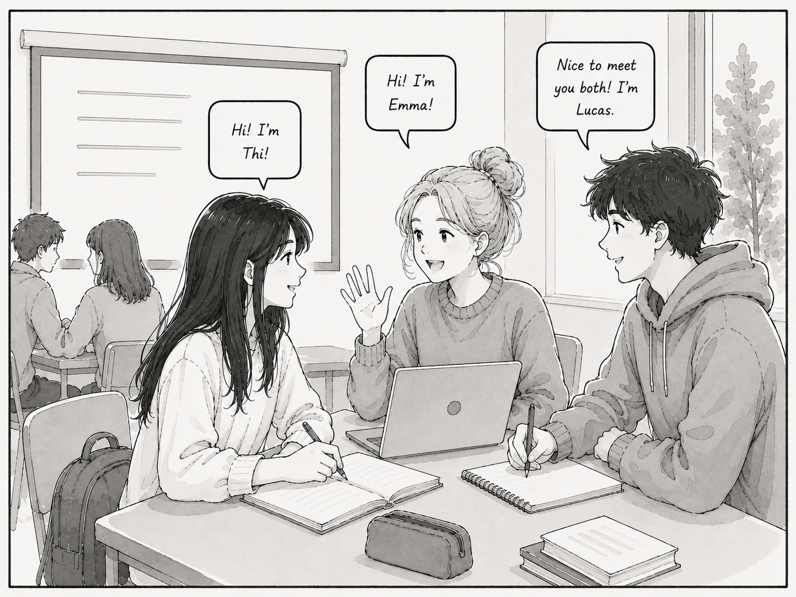

Chapter 1
The New Journey
One beautiful day, after finishing my high school graduation exams, I was waiting for the results and preparing to apply to my preferred university.
While lying on my bed, relaxing and scrolling through my phone.

My mother came into my room and started talking to me.

She looked at me and asked if I would like to study in Australia. I replied that I needed some time to think it through carefully.


After carefully considering everything, including my future, the opportunities available to me, and the benefits of each option, I began to see a clearer path forward.

With a sense of excitement and curiosity

I stepped into a completely new chapter of my life.

At first, I felt excited and curious about this new place and everything it had to offer.

Everything felt unfamiliar yet amazing, so different from my home country, with its modern infrastructure and advanced development.

I also made many new friends, especially international friends, which allowed me to learn about different cultures and perspectives.

At first, everything was exciting and enjoyable the people, the place I lived, and the new environment around me. However, as time went by, things gradually began to change. As I soon discovered, life was not always as smooth and peaceful as I had expected.